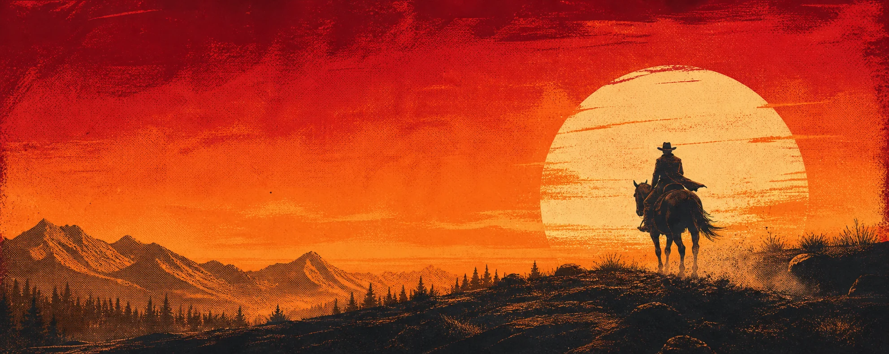

Community over reach
Et engageret publikum er mere værd end et stort, passivt tal.
Dansk streamer & entertainer
Marcel — bedre kendt som Marcelo — laver live underholdning, store creator-projekter og samarbejder, der føles som indhold. Ikke reklamepauser.
ON AIR når idéen er god nok
01 / INTRO
En kanal er let at starte.
Et sted folk kommer tilbage til kræver lidt mere.
Marcelo bygger formater, løbende jokes og events sammen med sit community — med plads til både det planlagte og det, der går helt galt.
LIGE NU
Vi fortsætter ugens spil, gennemgår chatten og forsøger sandsynligvis noget, der lød lettere på papiret.
Følg på Twitch ↗02 / OM MARCEL
Marcel er en dansk streamer og entertainer med fokus på den slags liveshows, hvor chatten ikke bare ser på — den er med til at forme øjeblikket.
Indholdet bevæger sig mellem gaming, IRL, samtaler og større specialprojekter. Fællesnævneren er nærvær, timing og en forkærlighed for idéer, der måske er en anelse for ambitiøse.
For nye seere er døren åben. For gamle seere er de dårlige interne jokes stadig i live. Og for partnere er målet enkelt: at skabe noget, publikum faktisk har lyst til at se.
Et engageret publikum er mere værd end et stort, passivt tal.
Brandet skal passe ind i formatet — ikke afbryde det.
Der skal være plads til spontanitet, fejl og ægte reaktioner.
03 / UDVALGTE PROJEKTER
Hovedsiden holder styr på tingene. Projekterne får lov til at gå helt fra forstanden.

ÅBN PROJEKTSIDEN04 / KLIP
Tre klip er nok til at forstå energien. Alle kort her er dummy-pladser, klar til Twitch-, YouTube- eller TikTok-links.
05 / AUDIENCE
Dummy-tal viser den færdige præsentation. Erstat dem med verificerede platformstal før siden offentliggøres.
DEMO DATAPå tværs af aktive platforme
Seneste 90 dages gennemsnit
Timer pr. måned
Dansk, digitalt indfødt publikum
Eksempel på aldersfordeling
06 / SAMARBEJDE
Produktet bliver en naturlig del af streamens format, udfordring eller samtale.
Et selvstændigt koncept med sin egen identitet, landingsside og fortælling.
Et længere samarbejde, hvor troværdighed og gentagelse får lov til at arbejde.
“Indsæt et kort, konkret partnercitat her. Gerne om processen, publikumsreaktionen eller resultatet — ikke bare ‘godt samarbejde’.”
MEDIA KIT / 2026
Media kittet kan samle verificerede tal, målgruppe, tidligere cases, formater, priser og praktiske kontaktoplysninger i én partnerklar PDF.
Download media kit ↓ Dummy-download — tilføj PDF, før linket aktiveres.07 / KONTAKT
Samarbejde, gæsteoptræden, presse eller noget helt fjerde. Skriv kort, hvad du forestiller dig — så vender Marcels team tilbage.
kontakt@indsæt-domæne.dk DUMMY MAIL · SKAL UDSKIFTES